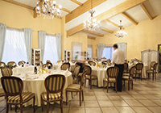
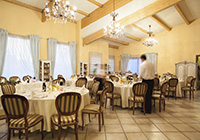

Welcome to the Landon Hotel
The original Landon perseveres after 50 years in the heart of West
London.
 The West End neighborhood has something for everyone—from
theater to dining to historic sights. And the not-to-miss Rooftop
Cafe is a great place for travelers and locals to engage over
drinks, food, and good conversation. To learn more about
the Landon Hotel in the West End, browse our website and
download our handy information sheet.
The West End neighborhood has something for everyone—from
theater to dining to historic sights. And the not-to-miss Rooftop
Cafe is a great place for travelers and locals to engage over
drinks, food, and good conversation. To learn more about
the Landon Hotel in the West End, browse our website and
download our handy information sheet.
Spread across three pretty white town houses in peaceful Leinster Square, we are in the heart of London’s cosmopolitan Notting Hill neighbourhood, a short walk from the Portobello Road Market and within easy reach of various tourist hotspots including Hyde Park, Oxford Street and Westfield Shopping Centre. Just a few steps from us is the fashionable Westbourne Grove where the annual Notting Hill Carnival passes through.
Beyond the Victorian facade and entrance
pillars are stylish individually-designed bedrooms and suites in
palettes of cream, brown, red and black with an Oriental flavour
alongside trendy minimal furnishings, high-tech entertainment units
and stunning marble, limestone and slate bathrooms. This is style on
a budget: high-end finishes and use of lavish fabrics and materials
such as silk, velvet and the finest cotton create a lavish and
comfortable setting. Rooms are functional too with Free WiFi, Smart
Flatscreen TV, in-room Safe, Tea and Coffee Making Facilities;
Bathrooms have walk-in power showers and designer toiletries. If
staying with friends or the children, Triple and Family Rooms are
ideal while the Honeymoon Suite is the pinnacle of City romance
spots with its Jacuzzi bath, floor-to-ceiling windows and private
terrace. Head on down to the lower ground floor for a freshly
prepared continental breakfast each morning or weather permitting,
outside on the communal terrace. Or relax in our designated guest
lounge area on the ground floor where you can read a newspaper,
catch up with emails or plan your next move. Whatever that is you
will find our location handy, being just 7 minutes walk from Notting
Hill Underground Station, Bayswater Tube Station and Queensway Tube
Station.